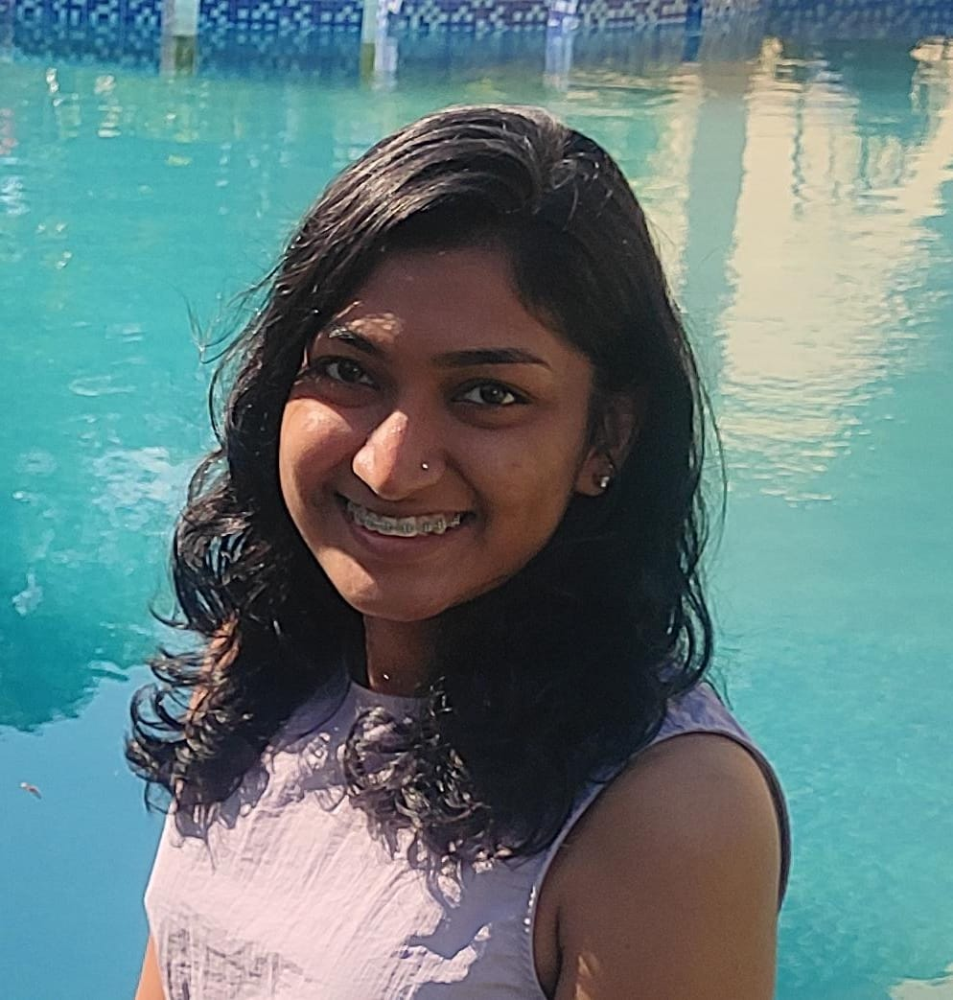

Rekha B

Summary
I’m a Computer Science Engineering student at LBS Institute of Technology for Women, Trivandrum, currently in my final year.
I have a strong foundation in data structures and front-end development using HTML, CSS, and JavaScript.
Along with my technical skills, I enjoy solving problems and working collaboratively in teams.
I’m looking for opportunities where I can apply my knowledge, contribute to meaningful projects, and grow professionally.
Education
-
LBS Institute of Technology for Women, Trivandrum
Bachelor of Technology | Computer Science and Engineering
2022 – 2026 (Expected)
-
Holy Trinity Vidyabhavan, Karthikapally
Higher Secondary Education | Science Stream
2020 – 2022
Experience & Workshops
-
Web Mastery Internship
Nov 2023 – Dec 2023
Completed a web development internship focused on mastering HTML, CSS, and JavaScript basics.
-
Computer Hardware and Networking Internship
Nov 2022 - Jan 2023
Gained hands-on experience with computer hardware assembly and network setup.
-
Social Work Internship – Insight for Innovation
Jan 2023
Supported underprivileged students through teaching and digital education initiatives.
-
KELTRON Industrial Visit, Trivandrum
July 2023
Observed electronics manufacturing and embedded systems production.
-
Power of AI Workshop
April 2024
Explored fundamentals and applications of Artificial Intelligence.
-
Workshop on AI-Driven Cyber Security
September 2024
Learned how AI enhances cyber threat detection and prevention.
-
Power BI Workshop
October 2024
Created interactive dashboards and visualized data using Microsoft Power BI.
-
Flutter Workshop
September 2024
Introduced to cross-platform mobile app development using Flutter and Dart.
-
Blockchain Workshop
September 2024
Overview of blockchain technology and its real-world applications.
-
Cloud Computing Workshop
February 2025
Learned about cloud services, deployment models, and infrastructure basics.
-
MATLAB Workshop
September 2023
Hands-on session on scientific computing and simulations using MATLAB.
-
Programming in Python Workshop
October 2023
Improved programming skills with Python basics and scripting.
Skills
Technical Skills
- Python, C, Java (basic)
- HTML, CSS, JavaScript
- CSS Grid & Flexbox
- Bootstrap
- MySQL (basic)
- Git & GitHub
- Visual Studio Code
- Jupyter Notebook
- Canva (UI Design & Presentations)
Soft Skills
- Problem-solving
- Team collaboration
- Effective communication
- Presentation & public speaking
- Adaptability & flexibility
- Creative thinking
- Time management
Others
My Hobbies
Contact me